Lecture 19 Workbook
This workbook holds the notes and the questions for Lecture 19. Each section starts with notes that explain everything on the slides, and a little more. Answer the questions as we discuss the slides. For a multiple-choice question, circle one letter. Section 8 has two complete programs to write after class. By the end, you should be able to:
- write an abstract method, and say what it promises about every subclass;
- declare an abstract class, and say what it may and may not contain;
- finish a subclass of an abstract class, or explain why it must be abstract too;
- use an abstract class as the type of variables, parameters and lists;
- write normal methods in an abstract class that call its abstract methods;
- decide whether a superclass should be abstract or concrete; and
- write complete programs with an abstract superclass and concrete subclasses.
1. Abstract methods
Abstract method syntax
An abstract method is a method header with no body. It says what every subclass must be able to do, but not how. Each subclass writes its own body for it.
The header is a normal header with the word abstract added, and it ends with a semicolon where the body would be:
public abstract double area();Compare it with a normal method, which has a header and a body in braces:
public double area()
{
return width * height;
}A class that has an abstract method must itself be marked abstract. Section 2 explains why.
Three mistakes
- An empty body is still a body.
public abstract double area() { }giveserror: abstract methods cannot have a body. - A private method is hidden from subclasses, so no subclass could write its body.
private abstract double area();giveserror: illegal combination of modifiers: abstract and private. - Leaving out the body without writing
abstract:public double area();giveserror: missing method body, or declare abstract.
Shape and two subclasses
Our example is a set of shapes. Every shape has an area, but the way to work it out depends on the kind of shape. So Shape declares area() as abstract, and Rectangle and Square each write a body. In UML, italics mark something abstract: the class name Shape and the method area().
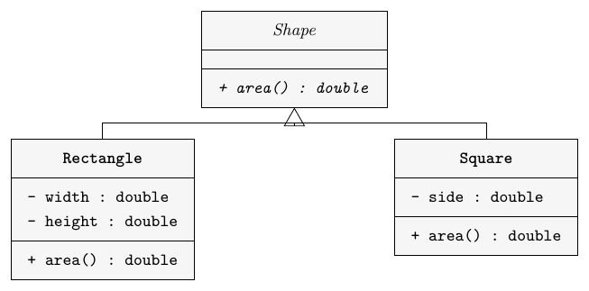
public abstract class Shape
{
public abstract double area();
}public class Rectangle extends Shape
{
private double width;
private double height;
public Rectangle(double width, double height)
{
this.width = width;
this.height = height;
}
public double area()
{
return width * height;
}
}Square looks the same, with one field side and the body return side * side;. You may write @Override above each area(), as in Lecture 18; the compiler then checks the header.
Calling area() on a Shape variable
Shape s = new Rectangle(3, 4);
System.out.println(s.area());
s = new Square(5);
System.out.println(s.area());12.0 25.0
The variable s has type Shape, so s.area() compiles: every Shape has area(). The body that runs is the one in the object's own class, Rectangle's first and Square's second.
Without area() in Shape
Why not leave area() out of Shape? Then s.area() does not compile, and code that gets a Shape must test for each class and cast:
public static double areaOf(Shape s)
{
if(s instanceof Rectangle) {
return ((Rectangle) s).area();
}
else if(s instanceof Square) {
return ((Square) s).area();
}
return 0;
}A Triangle class was added later, with its own area(), but nobody updated areaOf. For a rectangle, a square and a triangle the program prints the following. The triangle's area comes out as 0.0, with no error:
12.0 25.0 0.0
With a made-up body in Shape
Another idea is a normal area() in Shape that returns 0. Then s.area() compiles. But there is no true area for a general shape, so the 0 is made up. If a Triangle class forgets its own area(), it inherits the 0, and new Triangle(6, 3).area() prints 0.0. The compiler says nothing.
Benefits of abstract methods
In Shape | Client code | A subclass is added |
|---|---|---|
no area() | tests each class, then casts | wrong answer, no error |
area() returns 0 | one call: s.area() | forgets area(): 0, no error |
abstract area() | one call: s.area() | forgets area(): compile error |
With an abstract method, the compiler makes sure every subclass writes the method, and client code calls it on any Shape with no tests and no casts.
Practice
1.1 Every shape should also have a perimeter, but it is worked out differently for each kind of shape. Write the header of an abstract method perimeter in Shape that returns a double.
Add the abstract method to Shape below. The box includes a Square class with its own perimeter(), and prints the perimeter of a square.
1.2 Each line below is written inside public abstract class Part. Write yes or no: does it compile?
Line in Part | Compiles? |
|---|---|
public abstract int sides(); | |
public abstract void reset() { } | |
public String label(); | |
private abstract void draw(); |
1.3 What does public abstract double area(); in Shape say?
- Every subclass inherits a body that returns 0.
- Every concrete subclass must have an
area()method with its own body. area()can never be called.area()runs before the subclass's own method.
1.4 In the version without area() in Shape, why did areaOf return 0.0 for the triangle?
Triangle's ownarea()returns 0.areaOfhas no test forTriangle, so it reachesreturn 0.- The cast to
Rectanglefailed. Trianglehas noarea()method.
1.5 Shape has a normal area() that returns 0, and Triangle forgets to write its own. What happens with System.out.println(new Triangle(6, 3).area());?
- A compile error:
Trianglehas noarea(). - An exception when the program runs.
- It prints
0.0, with no error. - It prints
9.0.
1.6 Give two reasons to make area() abstract in Shape, rather than leave it out or give it a body that returns 0.
2. Abstract classes
Abstract class syntax
An abstract class is a class meant only to be a superclass. Write abstract before class:
public abstract class ShapeIt can hold abstract methods and normal methods. You cannot create an object of it with new, but you can create objects of its subclasses, such as new Rectangle(3, 4) and new Square(5).
Abstract methods only in abstract classes
A normal class must be able to run every one of its methods, so only an abstract class may have an abstract method. If Shape has public abstract double area(); but the header is just public class Shape, the compiler says:
Shape is not abstract and does not override abstract method area() in Shape
The fix is public abstract class Shape.
No objects of an abstract class
A plain Shape object would have no area() body to run, so Java refuses to create one. It does this when the code is compiled, not when it runs:
error: Shape is abstract; cannot be instantiated
The type Shape is still fine. Shape s on the left of = is allowed; only new Shape(...) on the right is not.
Contents of an abstract class
An abstract class can have everything a normal class has. Here is the full Shape we use from now on. It has a field, a constructor, two normal methods, and one abstract method:
public abstract class Shape
{
private String name;
public Shape(String name)
{
this.name = name;
}
public String getName()
{
return name;
}
public abstract double area();
public String describe()
{
return name + " has area " + area();
}
}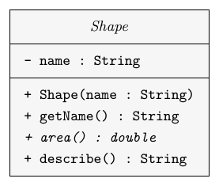
describe() calls area(), which has no body in Shape. Section 5 shows which area() runs.
Two more rules
- A class can be abstract with no abstract methods. Use this when an object of the general class makes no sense. For example,
Vehiclehas subclassesCarandBus, and every method has a body, but nobody owns a plain vehicle. - A class cannot be both
abstractandfinal.abstractneeds subclasses, andfinalforbids them.public abstract final class Shapegiveserror: illegal combination of modifiers: abstract and final.
Benefits of abstract classes
- Shared fields and methods are written once, in the superclass:
name,getName()anddescribe()live inShape. - Each subclass writes only what is different about it: its own fields and its
area(). - Nobody can create a meaningless general object.
Practice
2.1 Shape has public abstract double area();, but its header is public class Shape. What happens?
- It compiles, and
area()returns 0. - A compile error:
Shapeis not abstract but has an abstract method. - It compiles, but
new Shape("box")fails when the program runs. - It compiles, and no
Shapeobjects can be made.
2.2 Write yes or no: can an abstract class have each of these?
| Member | Allowed? |
|---|---|
| a private field | |
| a constructor | |
| a normal method with a body | |
| an abstract method | |
an object made with new |
2.3 No Shape object can ever be created. Why does Shape still have a constructor?
- It does not need one; the compiler ignores it.
- Each subclass constructor calls it with
super(name), to set the fieldname. new Shape("box")calls it.- It runs once, when the class is loaded.
2.4 public abstract class Vehicle has no abstract methods. Every method has a body. What is true?
- It is a compile error: an abstract class needs an abstract method.
- It compiles. No
Vehicleobjects can be made, only objects of its subclasses. - All of its methods become abstract.
- It compiles, and
new Vehicle()works because nothing is abstract.
2.5 Why is public abstract final class Shape a compile error?
- A final class cannot have fields.
- An abstract class cannot have a constructor.
- An abstract class needs subclasses, and a final class cannot have any.
finalmust come beforepublic.
2.6 In your own words, why must a class with an abstract method be abstract itself?
2.7 Write an abstract class Animal. It has a private field name, a constructor Animal(String name), a method getName(), and an abstract method makeSound() that returns a String.
Write Animal in the box. The box includes a Dog class whose sound is "Woof", and prints a dog.
3. Subclasses
The rule for subclasses
A concrete class is one you can create objects of. A concrete subclass must give a body to every abstract method it inherits. In the diagram, Rectangle and Square write area(), so they are concrete. Triangle does not, so it does not compile.
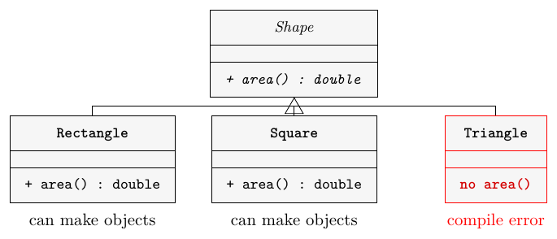
An unfinished subclass
Here Triangle inherits the abstract area() and does not write it:
public class Triangle extends Shape
{
private double base;
private double height;
public Triangle(String name, double base, double height)
{
super(name);
this.base = base;
this.height = height;
}
}Triangle is not abstract and does not override abstract method area() in Shape
The message names both ways out: make Triangle abstract, or override area().
Two ways to fix it
- Fix 1: write the body. Add
public double area()withreturn 0.5 * base * height;. Nownew Triangle("sail", 6, 3)works. This is the usual fix. - Fix 2: make it abstract too. Write
public abstract class Triangle extends Shape. Then there are no triangle objects, and the job of writingarea()passes toTriangle's own subclasses. This makes sense only whenTrianglewill have subclasses of its own.
Practice
3.1 Write a concrete class Circle that extends the full Shape of Section 2. It has a field radius, a constructor Circle(String name, double radius), and an area() that returns 3.14 * radius * radius. Then new Circle("plate", 10).describe() returns plate has area 314.0.
Write Circle in the box. The box includes the full Shape, and describes a plate with radius 10.
3.2 Triangle extends Shape has no area(). Which change makes it compile?
- Add
@Overrideabove the class header. - Remove
area()fromShape's subclassesRectangleandSquare. - Write
area()inTriangle, or declareTriangleabstract. - Call
super.area()inTriangle's constructor.
3.3 Triangle is fixed the second way: public abstract class Triangle extends Shape. Which line is now a compile error?
Shape s;Triangle t;Shape s = new Triangle("sail", 6, 3);ArrayList<Triangle> list = new ArrayList<>();
3.4 What is a concrete class?
- A class with no superclass.
- A class with no abstract methods in its own code.
- A class you can create objects of.
- A class declared
final.
3.5 Shape gets a second abstract method, public abstract double perimeter();. What must change in Rectangle, Square and Triangle, and what happens if one of them is not changed?
3.6 Write a concrete class Dog that extends your Animal from 2.7. A dog's sound is "Woof". Then this code prints Rex says Woof:
Animal a = new Dog("Rex");
System.out.println(a.getName() + " says " + a.makeSound());Write Dog in the box. The box includes a model Animal class and runs the two lines above.
4. Abstract types
Shape as a type
An abstract class is still a type. Use it for variables (Shape s = new Square("tile", 5);), for parameters (totalArea(ArrayList<Shape> shapes)) and for lists (ArrayList<Shape> shapes). No object is ever just a Shape: each one is a rectangle, a square or a triangle.
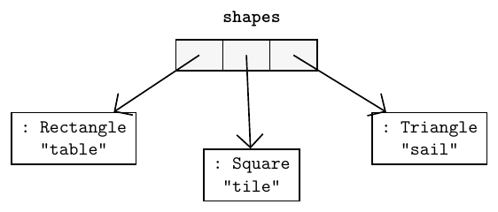
Compile time and run time
For double a = s.area();, two different things happen at two different times:
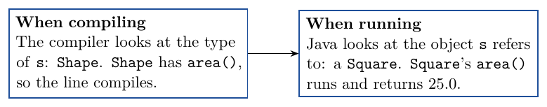
The abstract method is what lets the call compile. The subclass's body is what runs.
One loop for every shape
public static double totalArea(ArrayList<Shape> shapes)
{
double total = 0;
for(Shape s : shapes) {
total = total + s.area();
}
return total;
}s.area() works for every object in the list, with no instanceof tests and no casts. Compare it with areaOf in Section 1.
Adding a Triangle class
Triangle extends Shape and writes its own area(). The demo puts table (3 by 4), tile (side 5) and sail (base 6, height 3) in the list, describes each one and prints the total:
table has area 12.0 tile has area 25.0 sail has area 9.0 Total: 46.0
totalArea was not edited, and it adds the sail's 9.0 correctly.
Practice
4.1 The classes are the full shapes of this lecture. Each line below comes after these two lines. Write yes or no: does it compile?
ArrayList<Shape> list = new ArrayList<>();
list.add(new Rectangle("table", 3, 4));| Line | Compiles? |
|---|---|
list.add(new Square("tile", 5)); | |
list.add(new Shape("box")); | |
Shape s = list.get(0); | |
Square q = list.get(0); | |
double a = list.get(0).area(); |
4.2 Shape s = new Square("tile", 5); Which area() runs for s.area()?
Shape's, becauseshas typeShape.Square's, because the object is a square.- None:
Shape'sarea()is abstract, so the call is an error. - Both,
Shape's first.
4.3 With the same s, what lets s.area() compile?
Shapedeclaresarea(), even without a body.Squarehas a body forarea().- The variable was given a square on the same line.
- Nothing: it compiles only after a cast to
Square.
4.4 What can an ArrayList<Shape> hold?
- Only objects made with
new Shape(...). - Nothing, because
Shapeis abstract. - Objects of any concrete subclass of
Shape, mixed in one list. - Objects of one subclass only, chosen by the first
add.
4.5 Write a static method largest(ArrayList<Shape> shapes) that returns the shape with the largest area. You may assume the list is not empty. For table, tile and sail it returns tile.
Write largest in the box. The box includes the full shapes, and prints the name of the largest of table, tile and sail.
4.6 A new class Circle extends Shape is added, with its own area(). What must change in totalArea?
- A new
instanceof Circletest. - A cast to
Circle. - The parameter must become
ArrayList<Circle>. - Nothing.
4.7 Circle is the class from 3.1, and totalArea is the method of this section. Write what this code prints.
ArrayList<Shape> shapes = new ArrayList<>();
shapes.add(new Square("tile", 5));
shapes.add(new Circle("plate", 10));
for(Shape s : shapes) {
System.out.println(s.describe());
}
System.out.println("Total: " + totalArea(shapes));| Line | Printed |
|---|---|
| 1 | |
| 2 | |
| 3 |
5. Shared code
The constructor of an abstract class
Shape's constructor runs only through super(...) in a subclass constructor. For new Rectangle("table", 3, 4), Rectangle's constructor starts, and its first line super(name) runs Shape("table"), which stores the name. Then Rectangle's constructor sets its own fields. The name is stored once, in Shape.
public Rectangle(String name, double width, double height)
{
super(name);
this.width = width;
this.height = height;
}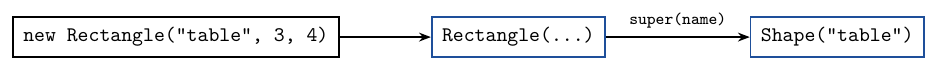
describe() and area()
describe() is written once, in Shape:
public String describe()
{
return name + " has area " + area();
}For table.describe(), Rectangle has no describe(), so Shape's runs. It calls area(), and that call, too, is found from the object's own class: Rectangle's area() runs and returns 12.0. The result is "table has area 12.0".
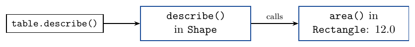
A normal method in an abstract class can call an abstract method, because every object that runs it belongs to a concrete subclass, which has a body.
describe() for three shapes
| Object | describe() from | area() from |
|---|---|---|
| table | Shape | Rectangle |
| tile | Shape | Square |
| sail | Shape | Triangle |
The sentence is built in one place. Only the number changes from class to class.
Practice
5.1 This method is added to Shape. The list holds table, tile and sail, in that order. Write what the loop prints.
public String size()
{
if(area() > 10) {
return getName() + " is large";
}
else {
return getName() + " is small";
}
}for(Shape s : shapes) {
System.out.println(s.size());
}| Line | Printed |
|---|---|
| 1 | |
| 2 | |
| 3 |
5.2 Write a method isBiggerThan(Shape other) for Shape. It returns true when this shape's area is larger than the area of other. For table and sail, table.isBiggerThan(sail) is true.
Add isBiggerThan to Shape below. The box includes the three subclasses, and compares the table and the sail both ways.
5.3 In what order does the code run for new Rectangle("table", 3, 4)?
Shape's constructor, then a newShapeobject, thenRectangle's constructor.Rectangle's constructor starts;super(name)runsShape's constructor; thenRectanglesets width and height.Rectangle's constructor runs completely; thenShape's constructor runs.- Only
Rectangle's constructor runs, becauseShapeis abstract.
5.4 For sail.describe(), where are describe() and the area() it calls found?
- Both in
Shape. - Both in
Triangle. describe()inShape,area()inTriangle.describe()inTriangle,area()inShape.
5.5 area() has no body in Shape. Why can describe(), in Shape, still call it safely?
- Every object that runs
describe()belongs to a concrete subclass, which has a body forarea(). - The call returns 0 when there is no body.
describe()is only ever called onShapeobjects.- The compiler copies a body into
Shape.
5.6 Why is describe() written in Shape rather than once in each subclass?
5.7 describe() in Shape is changed to return name + ": " + area(). Which classes must be edited, and why?
6. Choosing
Abstract or concrete
Not every superclass should be abstract. Two questions decide:
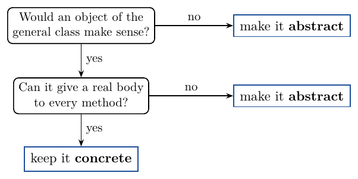
If the general class is useful by itself, keep it concrete.
Three cases
Animal, with subclassesDogandCat. Every animal makes a sound, but there is no general sound. Make it an abstract class, with an abstract methodmakeSound().BankAccount, with subclassSavingsAccount. The bank opens plain accounts too. Keep it concrete: a plain account is a real thing.Vehicle, with subclassesCarandBus. Every method has a real body, but nobody owns a plain vehicle. Make it an abstract class with no abstract methods.
Practice
6.1 For each superclass, write abstract with an abstract method, concrete, or abstract, no abstract methods.
| Superclass | Choice |
|---|---|
Instrument, with Guitar and Drum. Every instrument plays, but there is no general way to play. | |
Book, with subclass Textbook. The library lends plain books too. | |
Employee, with Manager and Clerk. Every method has a body, but every employee is a manager or a clerk. |
6.2 Which is a good reason to keep a superclass concrete?
- It has subclasses.
- It has a constructor.
- Objects of the general class are useful by themselves.
- Its subclasses override some of its methods.
6.3 Vehicle has no abstract methods. What is gained by declaring it abstract?
- Its methods run faster.
- Its subclasses no longer need constructors.
- Nobody can create a plain
Vehicleobject. - Its subclasses must override every method.
6.4 Give your own example of a superclass with two subclasses that should be abstract. Name one abstract method it should have, and say why that method has no body in the superclass.
7. Review
Abstract methods and classes
An abstract method is a header with no body, such as public abstract double area();. A class with an abstract method must be an abstract class, and no objects of it can be created. Every concrete subclass must write the body, or be abstract too. The abstract class is still a type for variables, parameters and lists, and the body that runs is found from the object's class. An abstract class can hold fields, a constructor and normal methods, and a normal method can call an abstract one. Make a superclass abstract when a plain object of it makes no sense.
Practice
7.1 Write true or false for each statement.
| Statement | True or false? |
|---|---|
| An abstract class can have a constructor. | |
Shape s; is a compile error when Shape is abstract. | |
| A concrete subclass must write every inherited abstract method. | |
| An abstract class must have at least one abstract method. |
7.2 Shape is abstract. Which line is a compile error?
ArrayList<Shape> shapes = new ArrayList<>();Shape s = new Square("tile", 5);Shape s = new Shape("box");double a = s.area();
7.3 This class should be an abstract superclass for Guitar and Drum, each with its own sound(). It has two mistakes, and each one stops it from compiling. Find both and give a fix for each.
public class Instrument
{
private String name;
public Instrument(String name)
{
this.name = name;
}
public String getName()
{
return name;
}
public abstract String sound()
{
return "";
}
}Now fix both mistakes in the box. The box includes a Guitar class whose sound() returns "strum", and prints the guitar.
8. Complete Java Programs
Write these two programs after class. Each reuses classes from Lecture 18's complete programs, now with an abstract superclass.
Program A: Fleet
Vehicle(String plate)is now abstract. It keepsdrive(int distance),getPlate()andgetKm(). Add an abstract methoddouble ratePerKm(), a methoddouble cost()that returns the km times the rate, andtoString(), which returns text such asCAR-7: 30 km, cost 15.0.Car(String plate)extendsVehicle. Its rate is 0.5 per km.Truck(String plate, int maxLoad)extendsVehicleand hasgetMaxLoad(). Its rate is 2.0 per km.Fleethas one private fieldArrayList<Vehicle> vehicles.add(Vehicle vehicle)adds a vehicle,printAll()prints each vehicle withprintln, andtotalCost()returns the total cost.FleetDemomakes the carCAR-7, the truckTRK-42with a maximum load of 900, and the carVAN-3. The first car drives 30 km, the truck 100 km and then 50 km, and the second car 20 km. It adds the three to a fleet in that order, and prints them all and the total cost.
VehicleThe starter is the Vehicle class of Lecture 18. The box includes a Car class with a rate of 0.5, drives a car and prints it.
TruckThe box includes a model Vehicle class, drives a truck and prints it.
FleetThe box includes model Vehicle, Car and Truck classes and runs FleetDemo.
The demo prints:
CAR-7: 30 km, cost 15.0 TRK-42: 150 km, cost 300.0 VAN-3: 20 km, cost 10.0 Total cost: 325.0
Program B: Show
Ticket(String seat)is now abstract, withgetSeat(). The price depends on the kind of ticket: add an abstract methodint price(), andtoString(), which returns text such asA3: 20 dollars.AdultTicket(String seat)extendsTicket. Its price is 20.StudentTicket(String seat, String studentId)extendsTicketand hasgetStudentId(). Its price is 15. ItstoString()usessuperand returns text such asB12: 15 dollars, student 2001234.Showkeeps its tickets in one private field,ArrayList<Ticket> tickets.sell(Ticket ticket)adds the ticket,printSeats()prints each ticket withprintln, andtotalSales()returns the total of the prices.ShowDemosells an adult ticket for seat A3, a student ticket for seat B12 to student 2001234, and an adult ticket for seat C5. Then it prints the seats and the total.
TicketThe box includes an AdultTicket class with a price of 20, and prints an adult ticket.
StudentTicketThe box includes a model Ticket class, and prints a student ticket.
ShowThe box includes model Ticket, AdultTicket and StudentTicket classes and runs ShowDemo.
The demo prints:
A3: 20 dollars B12: 15 dollars, student 2001234 C5: 20 dollars Total: 55 dollars
Lecture summary
An abstract class is a superclass that only exists to be extended. Its abstract methods say what every subclass must do, and each subclass says how.
Abstract methods
- An abstract method is a header with no body:
public abstract double area();, ending with a semicolon. - An empty body
{ }is still a body, and an abstract method cannot beprivate. - With
area()abstract inShape, code with aShapevariable callss.area()directly, with noinstanceoftests and no casts, and a subclass that forgetsarea()is a compile error, not a wrong answer of 0.
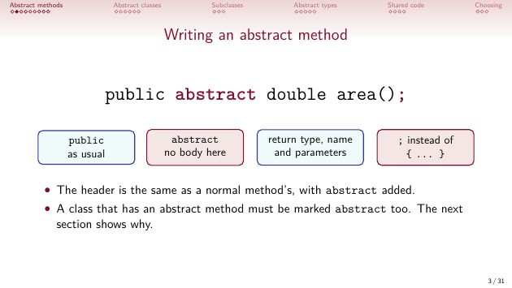
Abstract classes
- A class with an abstract method must be abstract:
public abstract class Shape. - No objects of an abstract class:
new Shape("box")is a compile error.Shape sas a variable is fine. - An abstract class can have fields, a constructor and normal methods. It may have no abstract methods at all, and it cannot be
final.
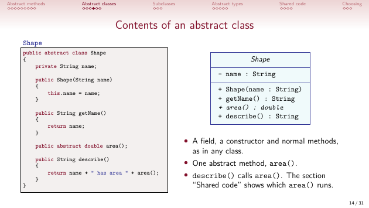
Subclasses
- A concrete class is one you can create objects of. A concrete subclass must write a body for every inherited abstract method.
- An unfinished subclass has two fixes: write the method, or declare the subclass abstract too.
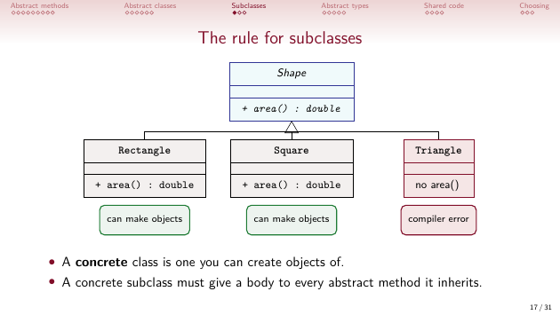
Abstract types
- An abstract class is still a type for variables, parameters and lists:
ArrayList<Shape>holds rectangles, squares and triangles together. - The type of the variable decides whether
s.area()compiles; the class of the object decides whicharea()runs. totalAreaneeds no change when a new subclass is added.
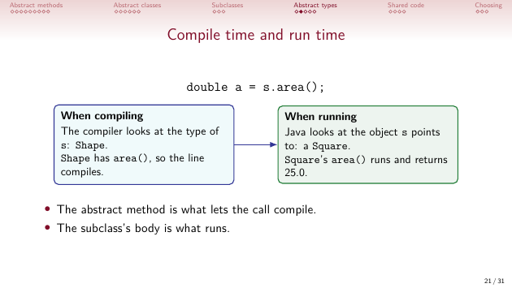
Shared code
- The abstract class's constructor runs through
super(name)in each subclass constructor. - A normal method can call an abstract one:
describe()inShapecallsarea(), and each object's ownarea()runs.
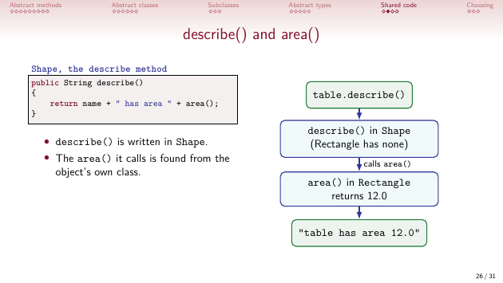
Choosing
- Make a superclass abstract when a plain object of it makes no sense, or when it cannot give a real body to every method.
- Keep it concrete when a plain object of it is useful by itself.
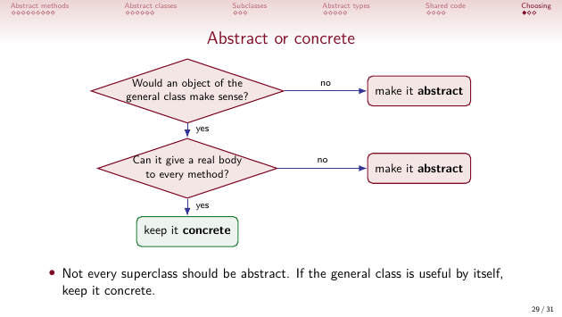
Programs
VehicleandTicketbecome abstract, with the abstract methodsratePerKm()andprice(). Each subclass gives its own rate or price, andcost()andtoString()are written once in the superclass.- The next lecture introduces interfaces.